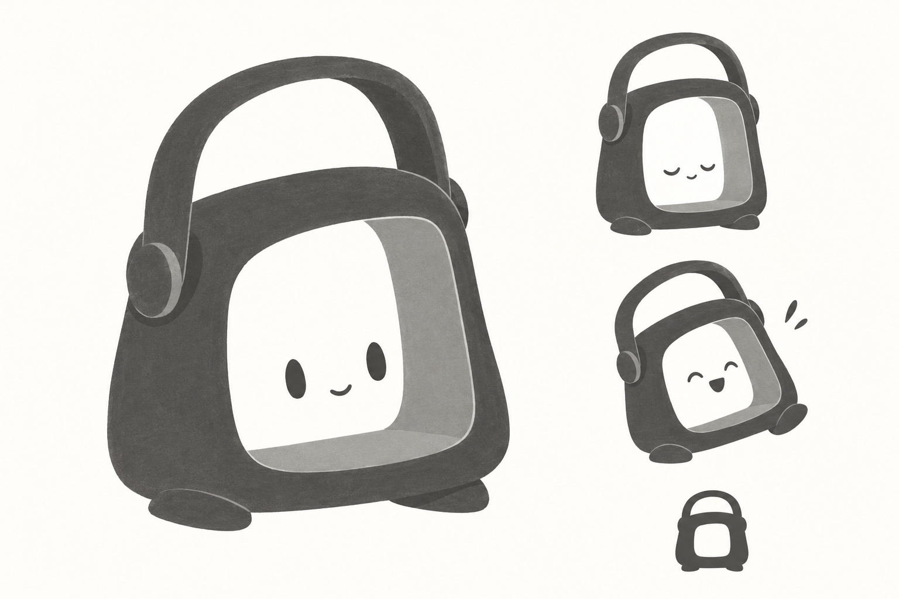

r002-c01
Le veilleur

- Forme
- Corps trapu encadré par une anse ouverte ; centre creux.
- Personnalité
- Compagnon serviable, rassurant et un peu espiègle.
- Mouvement possible
- Inclinaison attentive, léger tassement, anse expressive ; repos parfaitement immobile.
- Force
- Lien immédiat au nom et potentiel de marque structurée.
- Risque
- Lanterne générique, pictogramme de camping ou personnage trop mécanique.
Lecture de cette planche
Le corps encadré et l’anse se lisent clairement ; repos et expression sont reconnaissables. Le rendu ajoute pieds, visage, perspective et texture : à traiter comme hypothèses, pas invariants. Évoque aussi un téléviseur ou un sac, et le visage reste générique.